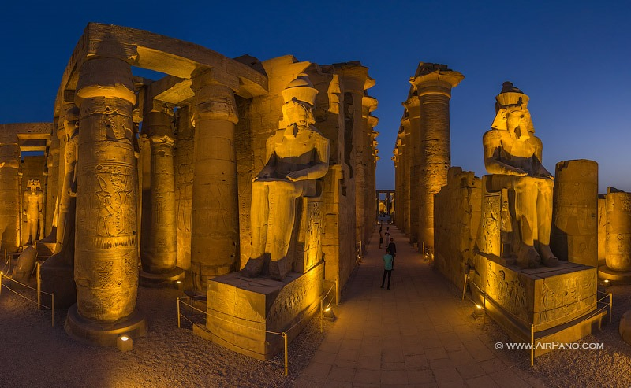
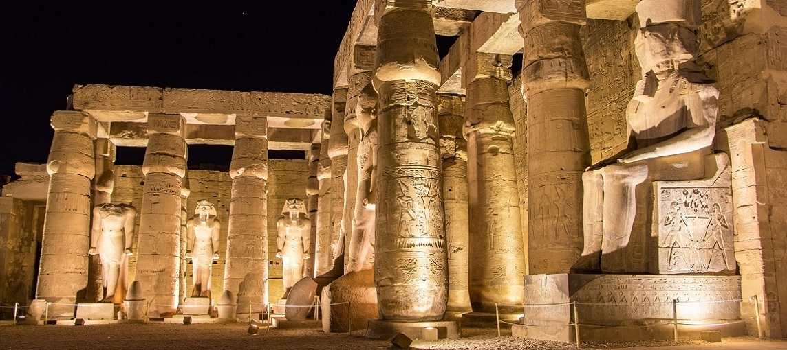
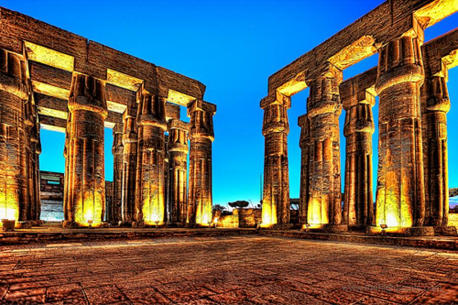
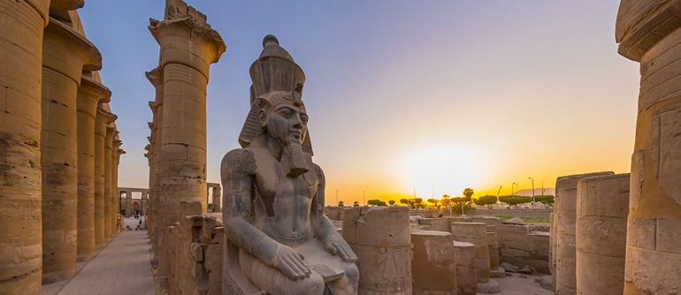
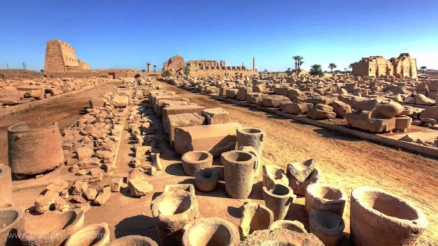

Luxor






Luxor is a city on the east bank of the Nile River in southern Egypt. It's on the site of ancient Thebes, the pharaohs’ capital at the height of their power, during the 16th–11th centuries B.C. Today's city surrounds 2 huge, surviving ancient monuments: graceful Luxor Temple and Karnak Temple, a mile north. The royal tombs of the Valley of the Kings and the Valley of the Queens are on the river’s west bank.